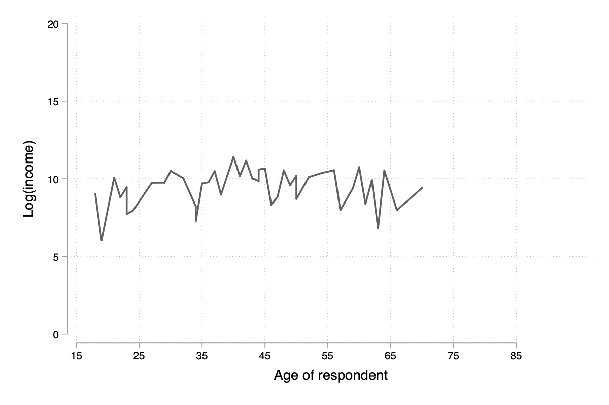

Stata : fonctionnalités graphiques
Table des matières
Stata dispose d’un excellent système graphique avec de nombreuses options de personnalisation. La référence reste l’ouvrage de [1], actuellement dans sa 3e édition. D’autres ouvrages sont disponibles, comme par exemple celui de Nick Cox [2]. Mais il est également recommendé de consulter le site de support de Stata qui offre un panorama des différents types de graphique avec un accès interactif à chacun des cas de figure.
Les commandes graphiques peuvent être utilisées pour décrire des données ou en tant que commandes de « post estimation » (par exemple, analyse en composantes principales, graphique de résidus).
Introduction
Les données qui serviront de base à la plupart
des illustrations de ce chapitre portent sur une
enquête socio-économique allemande réalisée en 2009
et décrite dans l’ouvrage de Kohler & Kreuter
[3]. Les
variables d’intérêt sont les suivantes :
ybirth (année de naissance),
hhnr2009 (foyer résidentiel),
sex (sexe), mar (statut
marital), edu (niveau d’éducation),
yedu (nombre d’années de formation),
voc (niveau secondaire ou
université), emp (type d’emploi),
egp (catégorie
socio-professionnelle), income
(revenus, en €), size (taille du
logement), hhsize (nombre de personnes
dans habitation).
set scheme plotplain
// translator set gph.svg fontface "Droid Sans"
use data/gsoep09
describe, short
describe, simple
(SOEP 2009 (Kohler/Kreuter)) Contains data from data/gsoep09.dta obs: 5,411 SOEP 2009 (Kohler/Kreuter) vars: 65 13 Feb 2012 17:08 size: 568,155 Sorted by: persnr persnr income rooms eqplif pic wor10 hhnr2009 hhinc renttype eqpnrj lsat wor11 state hhsize rent hhtyp wor01 wor12 ybirth hhsize0to14 reval area1 wor02 sample sex rel2head eqphea area2 wor03 intnr mar ymove eqpter dvisits wor04 hhnr edu ybuild eqpbas heval wor05 strata yedu condit eqpgar hsat wor06 psu voc dsat eqpalm polint wor07 dweight emp size eqpsol pia wor08 xweights egp seval eqpair pib wor09
Voici un aperçu des données sous forme de listing des premières observations :
list persnr-sex in 1/5
+-------------------------------------------------------+ | persnr hhnr2009 state ybirth sex | |-------------------------------------------------------| 1. | 8501 85 N-Rhein-Westfa. 1932 Male | 2. | 8502 85 N-Rhein-Westfa. 1939 Female | 3. | 15001 150 N-Rhein-Westfa. 1946 Male | 4. | 15002 150 N-Rhein-Westfa. 1953 Female | 5. | 18201 111373 Mecklenburg-V. 1969 Male | +-------------------------------------------------------+
Graphiques univariés de base
Fonction de répartition et fractiles
Considérons l’âge des répondants qui peut
être reconstruit à partir de l’année de
naissance (ybirth) et de l’année
de réalisation de l’enquête (2009) :
generate age = 2009 - ybirth
summarize age
Variable | Obs Mean Std. Dev. Min Max
-------------+---------------------------------------------------------
age | 5,411 49.50712 18.12642 17 100
Bien entendu, l’option details
de summarize
apporte beaucoup plus d’information concernant
la distribution de la variable, notamment du
point de vue des fractiles :
summarize age, detail
age
-------------------------------------------------------------
Percentiles Smallest
1% 17 17
5% 20 17
10% 24 17 Obs 5,411
25% 36 17 Sum of Wgt. 5,411
50% 49 Mean 49.50712
Largest Std. Dev. 18.12642
75% 63 97
90% 74 97 Variance 328.5672
95% 79 97 Skewness .1185642
99% 88 100 Kurtosis 2.165367
Pour se représenter ces chiffres sous forme graphique, il est possible d’afficher la fonction de répartition empirique des données, \(F_X(x)\), définie comme \(F_X(x) = P(X \le x)\) pour une variable aléatoire \(X\), ce qui permet d’évaluer visuellement quelle proportion des données se situe en-deça d’une certaine valeur \(x\). Il est également possible de jauger de la quantité d’observations contenues dans un intervalle (puisque \(P(a < X \le b) = F_X(b) - F_X(a)\)), surtout si l’on s’aide visuellement en superposant des lignes horizontales au points d’ordonnée \(a\) et \(b\).
Dans un premier temps, examinons la courbe des quantiles produite par la commande quantile. Il s’agit de représenter la distribution jointe des valeurs ordonnées de la variable d’intérêt en fonction des quantiles d’une loi uniforme :
quantile age
graph export "fig-02-quantile-age.svg", replace
Figure 1 : Distribution des fractiles d’âge
Pour la fonction de répartition, si l’on ne souhaite pas passer par des packages additionnels (p.ex., cdfplot), le plus simple consiste à calculer directement à calculer la fonction de répartition empirique à l’aide de cumul. Il s’agit en réalité de la fonction réciproque de celle présentée plus haut. Dans l’exemple ci-après, on affiche cette variable auxiliaire en fonction de l’âge et on surligne le premier et le troisième quartile par des lignes horizontales :
cumul age, gen(agecum)
sort agecum
graph twoway line agecum age, ytitle(F(x)) yline(.25 .75, lwidth(thin))
graph export "fig-02-cumul-age.svg", replace
Figure 2 : Fonction de répartition empirique de l’âge
Un graphique tout aussi intéressant consiste à afficher les fractiles d’une variable en fonction des fractiles d’une loi normale, ce que l’on appelle communément un diagramme de type quantile-quantile. L’examen de la forme de la courbe permet d’évaluer rapidement si les données sont compatibles avec l’hypothèse selon laquelle elles se distribuent « à peu près normalement ».
qnorm age, grid
graph export "fig-02-qnorm-age.svg", replace
Figure 3 : Diagramme quantile-quantile pour l’âge
Histogrammes et courbes de densité
Pour construire un histogramme de cette même
variable (age), on utilisera la
commande histogram,
en précisant l’option freq si l’on
souhaite afficher les effectifs
(« fréquences » en anglais) plutôt
que la densité :
histogram age, xtitle("Age des participants")
graph export "fig-02-histogram-age.svg", replace
Figure 4 : Distribution de l’âge des répondants
Notons que cette commande dispose de
l’option by() des commandes
twoway
de sorte qu’il est assez simple de tracer des
histogrammes conditionnés sur les valeurs prise
par une autre variable, comme illustré
ci-après.
label variable age "Age des participants"
histogram age, bin(15) by(sex)
graph export "fig-02-histogram-age-sex.svg", replace
Figure 5 : Distribution de l’âge des répondants selon le sexe
Rappelons que la fonction de densité, \(f_X\), et la fonction de répartition, \(F_X(x)\), discutée plus haut sont liées par une relation simple. Dans le cas continu, \(F_X(x) = \int_{-\infty}^x f_X(t)\, \mathrm{d}t\).
kdensity age, normal bw(5) lwidth(0.8)
graph export "fig-02-kdensity-age.svg", replace
Figure 6 : Distribution de l’âge des répondants
Notons qu’une alternative aux histogrammes
consiste à utiliser un diagramme en points à
l’aide de dotplot.
Dans ce cas, chaque point représente une
observation (idéal pour les petits
échantillons), mais cette commande se prête
mieux aux cas où l’on souhaite 2 ou plusieurs
distributions, grâce à son option
over(). Voici une illustration,
avec un petit échantillon aléatoire de la base
de données, la commande gsample
devant être installée au préalable :
preserve gsample 5, percent strata(sex) dotplot age, over(sex) center median graph export "fig-02-dotplot-age.svg", replace restore
Figure 7 : Distribution de l’âge selon le sexe
Diagrammes en barres et en points
Bien qu’il existe une commande graphique
pour tracer des diagrammes en barres, graph
bar, celle-ci s’utilise généralement à
partir de données agrégées (voir l’option
yvars avec (stat)).
On utilise donc la même commande qu’à la
section précédente, histogram,
en spécifiant l’option discrete,
comme illustré ci-dessous :
histogram edu, discrete freq addlabels
graph export "fig-02-histogram-edu.svg", replace
Figure 8 : Distribution d’effectifs selon les niveaux d’éducation
Comme on peut le voir, la figure 8 est loin d’être parfaite.
En particulier, les libellés de l’axe des
abscisses sont peu lisibles (à moins d’ajouter
une légende indiquant la correspondance entre
les codes numériques et les étiquettes des
niveaux de la variable edu), et
les barres verticales sont juxtaposées de sorte
qu’avec l’axe numérique il est facile de
prendre ce diagramme pour un histogramme pour
données continues. Voici une version qui
corrige ces deux aspects, notamment grâce à
l’usage de gap() et une
spécification plus poussée des étiquettes de
l’axe des x :
histogram edu, discrete freq addlabels gap(10) xla(1/5, valuelabel noticks ang(45))
graph export "fig-02-histogram-edu-v2.svg", replace
Figure 9 : Distribution d’effectifs selon les niveaux d’éducation
Pour réaliser un tel diagramme en utilisant graph bar, il est nécessaire de travailler avec une variable auxiliaire dans laquelle on accumule les effectifs conditionnels.
graph bar (count) persnr, over(edu) asyvars percent showyvars bargap(10) ytitle("Proportion") legend(off)
Les diagrammes en points, encore appelé « dotplot » ou « dotchart » de Cleveland [4], suivent le même principe que les diagrammes en barres. La commande graph dot peut être utilisée en lieu et place de graph bar ci-dessus, mais il est également possible et recommendé d’installer le package catplot. Celui-ci permet de représenter la distribution simple ou jointe de variables catégorielles, entre autres (voir la description disponible sur la page NJC Stata Plots) :
catplot edu
graph export "fig-02-catplot-edu.svg", replace
Figure 10 : Distribution d’effectifs selon les niveaux d’éducation
Et voici dans le cas où l’on croise deux
variables, grâce à l’option by()
(il est également possible d’indiquer deux
variables après le nom de la commande) :
catplot edu, by(sex) percent
graph export "fig-02-catplot-edu-v2.svg", replace
Figure 11 : Distribution selon les niveaux d’éducation et le sexe (%)
Diagramme de dispersion
Un diagramme de dispersion permet de représenter sous forme d’un nuage de points la covariation entre deux séries numériques.
generate lincome = log(income) if income > 0
scatter lincome age, ms(oh)
graph export "fig-02-scatter-age-income.svg", replace
Figure 12 : Distribution jointe du revenu (log) et de l’âge
À partir de Stata 15, les commandes
graphiques supportent la transparence pour
l’affichage des symboles, ce qui se révèle
plutôt pratique lorsque le nombre de points est
grand et que le risque de chevauchement de ces
derniers est critique. Le cas échéant il est
possible de modifier le type de symbole qui est
utilisé. Les symboles graphiques (graph
query symbolstyle) sont généralement
désignés par leur synonymes lettrés :
O (cercle), D
(losange), T (triangle),
S (carré), leur variantes de
petite taille (les mêmes lettres mais en
minuscules), suffixé éventuellement de la
lettre h (« hollow »)
pour indiquer que le symbole est rempli avec la
couleur par défaut. Il est également possible
d’ajouter un décalage aléatoire dans les deux
directions pour traiter ce dernier cas de
figure.
Une courbe « loess » [5] peut être superposée sur le diagramme de dispersion afin d’aider à visualiser la tendance globale de covariation entre les deux séries de mesure ainsi que les déviations locales à la linéarité (qui reste une des hypothèses fondamentales du modèle de régression linéaire, par exemple). Le chapitre 3 explique plus en détails la construction de ce type de courbe de régression locale. Pour ce faire, il suffit de combiner la commande précédente avec l’instruction lowess :
twoway (scatter lincome age, ms(oh)) (lowess lincome age, lwidth(medthick))
graph export "fig-02-loess-age-income.svg", replace
Figure 13 : Distribution jointe du revenu (log) et de l’âge
Notons qu’il n’est pas forcément nécessaire
de combiner les deux commandes graphiques dans
la mesure où lowess
permet également d’afficher le diagramme de
dispersion. Un paramètre qu’il est souvent bon
d’explorer est la largeur de la fenêtre de
lissage, bwidth, qui par défaut
vaut 0.8 ce qui consiste à utiliser 80 % de
l’échantillon pour calculer une valeur lissée
pour chaque observation. En conséquence, plus
la valeur de bwidth est élevée
plus le degré de lissage est important. En
voici une illustration sur 100 observations
choisies aléatoirement dans l’échantillon :
preserve
drop missing(lincome)
sample 100, count
twoway lowess lincome age, lw(medthick) bw(0.05) xlab(15(10)85) ylab(0(5)20) xtitle(Age of respondent) ytitle(Log(income))
graph export tmp/graph_001.svg, width(600) height(400) replace
forvalues w = 0.1(0.1)2 {
local j = string(`w'*10+1, "%03.0f")
twoway lowess lincome age, ms(none) lw(medthick) bw(`w') xlab(15(10)85) ylab(0(5)20) xtitle(Age of respondent) ytitle(Log(income))
graph export "tmp/graph_`j'.png", width(600) height(400) replace
}
// This should work with Graph2Png unless there's a problem with getting $PATH variable from within Stata
// shell convert -loop 0 tmp/graph_0*.png dist/fig-02-loess-age-dvisits.gif
restore

Figure 14 : Influence du paramètre de lissage
Graphiques composites
Représentations graphiques conditionnelles
On entend par représentation graphique conditionnelle
Voici un exemple d’une courbe de densité de l’âge calculée séparément chez les hommes et chez les femmes dans cet échantillon :
graph twoway kdensity age, by(sex)
graph export "fig-02-kdensity-age-sex.svg", replace
Figure 15 : Distribution de l’âge des répondants selon le sexe
Il n’est pas possible de superposer les deux
courbes à l’aide de over() mais
l’on peut toujours combiner les deux commandes
graphiques grâce à twoway.
Dans ce cas, il ne faudra pas oublier de
préciser dans une légende à quel niveau de
sex les deux courbes correspondent
:
graph twoway (kdensity age if sex == 1, bw(5)) (kdensity age if sex == 2, bw(5)), xtitle("Age") ytitle("Density") legend(label(1 "Male") label(2 "Female"))
graph export "fig-02-kdensity-age-sex-v2.svg", replace
Figure 16 : Distribution de l’âge des répondants selon le sexe
Les représentations graphiques sous forme de
« boîtes à moustaches » constituent
un bon exemple d’application des graphiques
conditionnels dans la mesure où l’aspect
compact de ce résumé numérique mis en forme
visuellement permet de juxtaposer de nombreuses
distributions. Considérons la variable
egp qui représente la classe
socio-économique des répondants, recodée en 3
classes après exclusion des personnes sans
revenu ou inactives :
recode egp (1/2=1) (3/5=2) (8/9=3) (15/18=.), gen(egp3)
label define egp3 1 "Service class 1/2" 2 "Non-manuals & self-employed" 3 "Manuals"
label values egp3 egp3
tabstat age, by(egp3) stat(min q max)
(4435 differences between egp and egp3)
Summary for variables: age
by categories of: egp3 (RECODE of egp (Social Class (EGP)))
egp3 | min p25 p50 p75 max
-----------------+--------------------------------------------------
Service class 1/ | 18 35 44 52 87
Non-manuals & se | 18 36 44 52 79
Manuals | 18 32 43 52 80
-----------------+--------------------------------------------------
Total | 18 34 44 52 87
--------------------------------------------------------------------
Voici la même représentation des quartiles
de la distribution de age, mais
sous forme graphique cette fois :
graph box age, over(egp3) ytitle("Age")
graph export "fig-02-box-age-egp.svg", replace
Figure 17 : Distribution de l’âge des répondants selon la classe socio-économique
dotplot age, over(egp3) xtitle("") ytitle("Age") ms(S)
graph export "fig-02-dotplot-age-egp.svg", replace
Figure 18 : Distribution de l’âge des répondants selon la classe socio-économique
Le package
stripplot peut également être utilisé afin
de représenter les distributions
conditionnelles sous forme de diagrammes en
points, à l’image de dotplot.
On utiliserait, par exemple, stripplot
age, over(egp3).
Combinaison de sous-graphiques
Il n’est parfois pas toujours possible de
reposer sur les options by() ou
over() afin de combiner des
sous-graphiques comme on le souhaiterait. La
commande
graph combine permet d’assembler n’importe
quel graphique sauvegardé en mémoire ou sur le
disque (en format gph). Voici un
exemple d’utilisation avec une série
chronologique disponible sur internet. Il
s’agit d’un ensemble de 144 observations sur le
volume mensuel de passagers sur les vols
internationaux.
webuse air2, clear
list in 1/5
(TIMESLAB: Airline passengers)
+--------------------+
| air time t |
|--------------------|
1. | 112 1949 1 |
2. | 118 1949.083 2 |
3. | 132 1949.167 3 |
4. | 129 1949.25 4 |
5. | 121 1949.333 5 |
+--------------------+
L’évolution du nombre de passagers au cours du temps est relativement simple à visualiser à l’aide de scatter :
scatter air time, m(o) c(l)
graph export "fig-02-scatter-air-time.svg", replace
Figure 19 : Évolution du nombre mensuel de passagers entre 1949 et 1961
Supposons que l’on souhaite afficher la même évolution du volume de passagers entre 1949 et 1961 mais, cette fois-ci, conditionnellement au mois de l’année. Pour cela, il est nécessaire de créer deux nouvelles variables :
generate y = floor(time)
generate m = mod(t, 12)
replace m = 12 if m == 0
label define m 1 "Jan" 2 "Feb" 3 "Mar" 4 "Apr" 5 "May" 6 "Jun" 7 "Jul" 8 "Aug" 9 "Sep" 10 "Oct" 11 "Nov" 12 "Dec"
label values m m
(12 real changes made)
Et voici ce que donnerait une telle représentation graphique en utilisant scatter. Notons que l’on pourrait grandement simplifier cette commande en utilisant les commandes graphiques spécifiques des données de panel ou des séries chronologiques (tsline) :
scatter air y, by(m, note("")) c(l) m(none) xtitle("")
graph export "fig-02-scatter-air-time-v2.svg", replace
Figure 20 : Évolution du nombre mensuel de passagers entre 1949 et 1961
À présent, on souhaiterait afficher dans
chaque sous-graphique la distribution des
autres mois, afin de servir de référence. Or il
n’est pas possible d’utiliser d’option
over() dans ce cas-là. En
revanche, on peut générer les 12 graphiques et
les assembler à l’aide de
graph combine. Dans un premier temps, il
est nécessaire de séparer les différents
sous-groupes de données :
quietly separate air, by(m) gen(mm)
forvalues j = 1/12 {
scatter mm* y, recast(line) lc(gs12 ...) lp(solid ...) xla(1949(2)1960) legend(off) title(mmonth) || line air y if m == `j', lp(solid) lw(medthick) xtitle("") title("`: label m `j''") name(p`j')
}
graph combine p1 p2 p3 p4 p5 p6 p7 p8 p9 p10 p11 p12, rows(3) cols(4)
graph export "fig-02-scatter-air-time-v3.svg", replace
graph drop _all
Figure 21 : Évolution du nombre mensuel de passagers entre 1949 et 1961
Commandes de post-estimation
Références
| [1] | M. N. Mitchell, A Visual Guide to Stata Graphics. Stata Press, 2004. |
| [2] | N. J. Cox, Speaking Stata Graphics. Stata Press, 2014. |
| [3] | U. Kohler and F. Kreuter, Data Analysis Using Stata. Stata Press, 3 ed., 2012. |
| [4] | W. S. Cleveland, The Elements of Graphing Data. Monterey, CA: Wadsworth, 1985. |
| [5] | W. S. Cleveland, “Robust locally weighted regression and smoothing scatterplots,” Journal of the American Statistical Association, vol. 74, p. 829–836, Dec 1979. [ DOI ] |